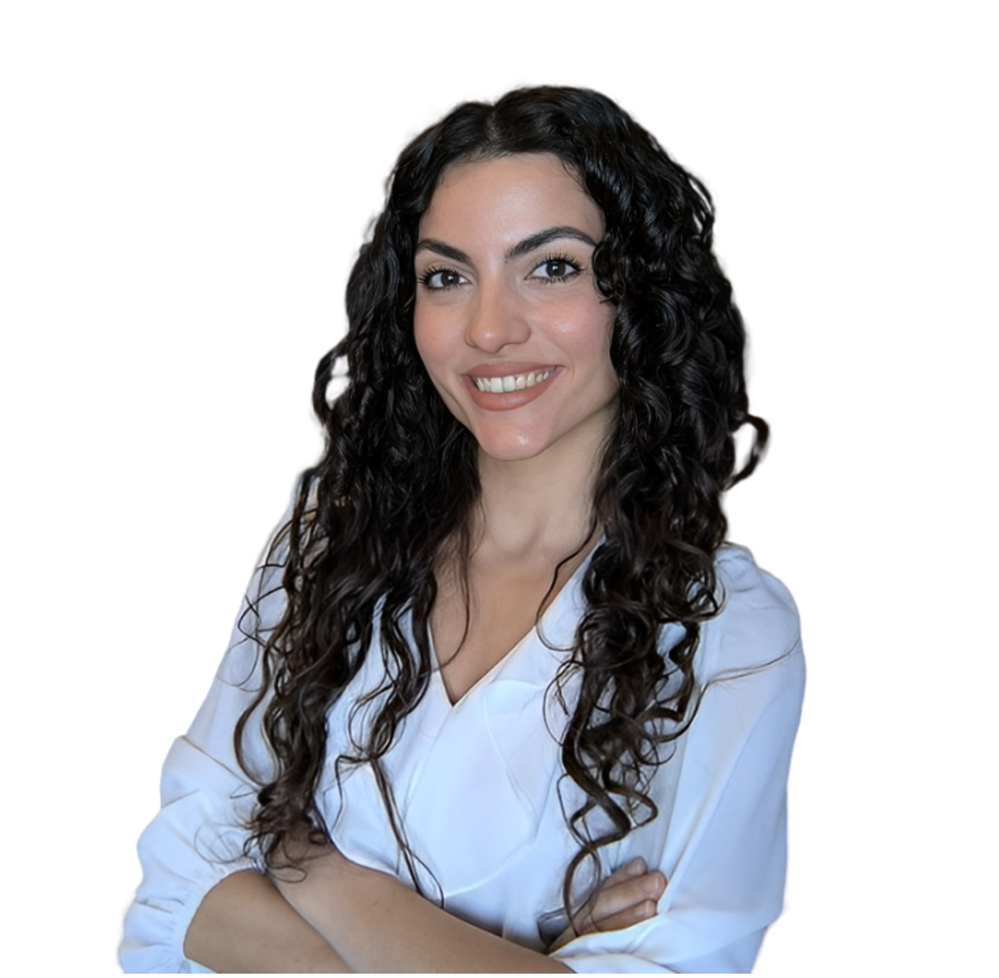

Aurora Rofena
Ph.D. Student, Artificial Intelligence
University Campus Bio-Medico of Rome
Computer Systems and Bioinformatics
Email: aurora.rofena [at] unicampus [dot] it


I am a Ph.D. student in Artificial Intelligence at the University Campus Bio-Medico of Rome (UCBM), where I conduct my research within the Computer Systems and Bioinformatics laboratory. My work focuses on advancing innovation in the Health and Life Science domain. I hold a Master of Science in Biomedical Engineering, which I completed with distinction, with a thesis developed in collaboration with Bracco Imaging S.p.A. and the Breast Unit at the UCBM Polyclinic, centered on virtual contrast enhancement in Contrast Enhanced Spectral Mammography (CESM). Additionally, I earned my Bachelor of Science in Medical Engineering from the University of Rome Tor Vergata, graduating with top honors.
My primary research interests are at the intersection of artificial intelligence and healthcare. I am particularly passionate about generative AI for biomedical image synthesis and multimodal learning techniques for medical image analysis. My projects have involved developing deep learning methods for breast cancer classification and image-to-image translation using advanced generative models. I aim to enhance diagnostic accuracy and tackle challenges such as missing imaging modalities by generating synthetic data.
In addition to my research, I am committed to academia through teaching and mentoring. I have served as a teaching assistant for machine learning courses and delivered guest lectures at the Medicine & Surgery and MedTech Summer School. My dedication to continuous learning has led me to participate in various Ph.D. summer schools and specialized courses to expand my knowledge. I have published my work in leading journals and presented at conferences, showcasing my commitment to driving AI-powered solutions in medical imaging and personalized healthcare.
Publications
- Radiomics for Predicting Prognostic Factors in Breast Cancer: Insights from Contrast-Enhanced
Mammography (CEM).
Claudia Lucia Piccolo, Marina Sarli, Matteo Pileri, Manuela Tommasiello, Aurora Rofena, Valerio Guarrasi, Paolo Soda, Bruno Beomonte Zobel
Journal of Clinical Medicine, 2024.
[paper] - A deep learning approach for virtual contrast enhancement in Contrast Enhanced Spectral
Mammography.
Aurora Rofena, Valerio Guarrasi, Marina Sarli, Claudia Lucia Piccolo, Matteo Sammarra, Bruno Beomonte Zobel, Paolo Soda
arXiv preprint, 2024.
[paper] - A Systematic Review of Intermediate Fusion in Multimodal Deep Learning for Biomedical
Applications.
Valerio Guarrasi, Fatih Aksu, Camillo Maria Caruso, Francesco Di Feola, Aurora Rofena, Filippo Ruffini, Paolo Soda
arXiv preprint, 2024.
[paper] - Virtual scanner: leveraging resilient generative ai for radiological imaging in the era of medical
digital twins.
Carolina Adornato, Cecilia Assolito, Ermanno Cordelli, Francesco Di Feola, Valerio Guarrasi, Giulio Iannello, Lorenzo Marcoccia, Elena Mulero Ayllon, Rebecca Restivo, Aurora Rofena, Rosa Sicilia, Paolo Soda, Matteo Tortora, Lorenzo Tronchin
Ital-IA, 2024.
[paper] - Building an AI-enabled metaverse for intelligent healthcare: opportunities and challenges.
Valerio Guarrasi, Lorenzo Tronchin, Camillo Maria Caruso, Aurora Rofena, Guido Manni, Fatih Aksu, Domenico Paolo, Giulio Iannello, Rosa Sicilia, Ermanno Cordelli, Paolo Soda
Ital-IA, 2023.
[paper]
Invited Talks
- September 2023: Exploring Artificial Intelligence at the Medicine & Surgery and MedTech
Summer School, University Campus Bio-Medico of Rome.
Teaching
- Spring 2024: Teaching Assistant for Machine Learning & Big Data Analytics at University
Campus Bio-Medico of Rome
Mentoring
- Arianna Manchia: Master's degree in Biomedical Engineering, Department of Engineering, University
Campus Bio-Medico of Rome. Main theme: Image-to-image translation with attention masks via Generative
Adversarial Networks.
- Carlo Di Cicco: Bachelor's degree in Industrial Engineering, Department of Engineering, University Campus Bio-Medico of Rome. Thesis title: “Software for Virtual Radiology”.
Service
- Program Committee : Generative Artificial Intelligence in Biomedical Applications at
CBMS 2025.
- Conference Reviewer: IEEE Engineering in Medicine and Biology Society 2024.
Feel free to contact me :)